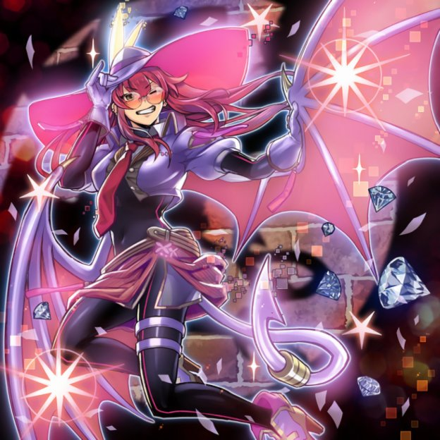
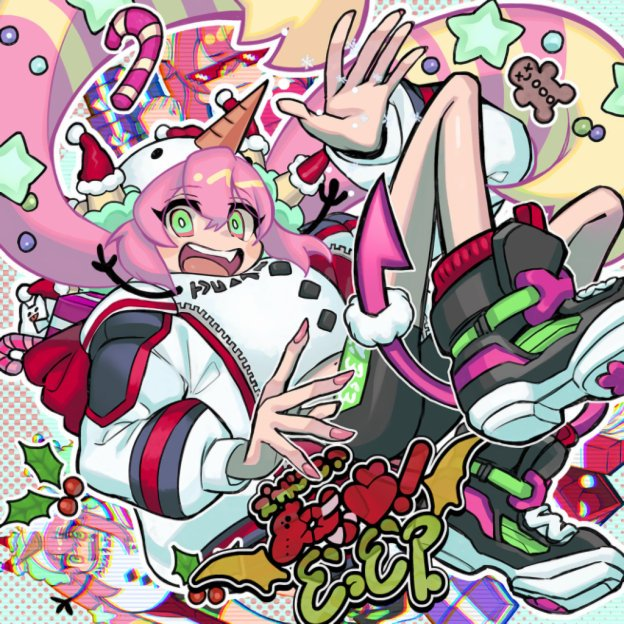

姬丝吉尔 キスキル
元气担当 // 粉色彗星
喜欢：鞋子、跳舞和小动物
直播形态 ☆
品红长发 + 乳白小恶魔角，粉白连帽衫露脐装。招牌是小尖牙咧嘴坏笑。

怪盗形态 ★
超大粉宽檐帽 + 橙黄眼镜，全息投影衣装展开。wink 怪盗人气极高。

Frost · 圣诞 ☆
雪人帽 + 红白条纹外套。被璃拉的企划套上的节日限定装，驾驭度满分。
「被璃拉的企划套着穿各种搞怪服装，却靠职业精神完美驾驭——在魔界也算头号怪人。」